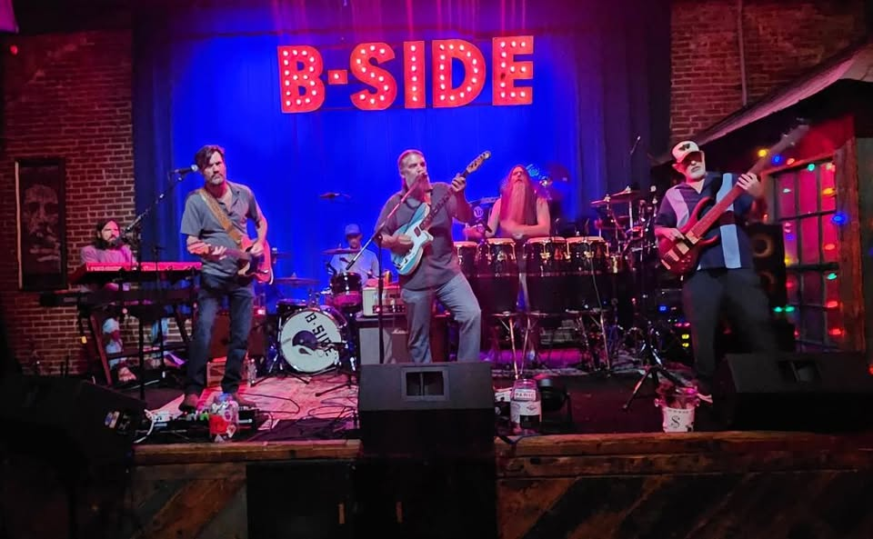
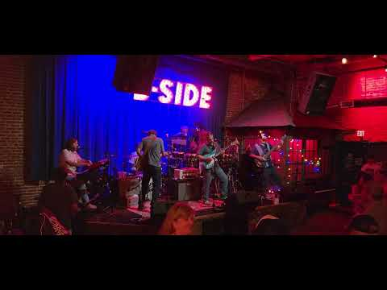
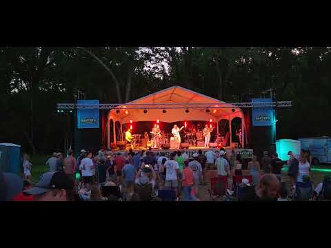
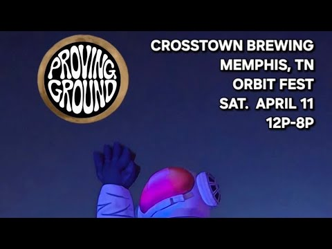

Memphis, Tennessee
A Tribute to Widespread Panic
Six musicians. One mission. The authentic sound of the Mikey era — swampy funk, Southern soul, and jams that don't stop.

Who We Are
Proving Ground is Memphis, Tennessee's most celebrated tribute to Widespread Panic — the legendary Athens, Georgia jam band that defined a generation of Southern rock, funk, and psychedelic improvisation. Formed by six lifelong musicians and die-hard Panic fans, Proving Ground doesn't just play the songs. They live them.
Their focus is the "Mikey era" — the raw, unfiltered years featuring founding guitarist Michael "Mikey" Houser, whose distinctive playing style and deep groove defined Widespread Panic's most beloved recordings. Every show, Proving Ground channels that spirit: fearless improvisation, deep-cut setlists, and the kind of swampy, soulful energy that makes you forget you're watching a tribute band.
From intimate club nights at B-SIDE Memphis and Crosstown Brewing to regional festivals like Orbit Fest and Livingston Jam, Proving Ground has built a devoted following across the South and beyond. They are, simply put, the real deal.
Six Souls, One Sound
Get Your Tickets
Catch Proving Ground live — there's nothing quite like experiencing the Mikey era in person. Check back often as new dates are added regularly.
Hear It for Yourself
With over 173 videos on YouTube, there's no shortage of proof. Dive in and let the jams speak for themselves.



The Music
Widespread Panic built their legacy on improvisation, community, and a refusal to play it safe. Their "Mikey era" — the years featuring founding guitarist Michael "Mikey" Houser — produced some of the most beloved recordings in the jam-band canon. Songs like Driving Song, Pigeons, Space Wrangler, Chilly Water, and Porch Song became anthems for a generation of fans who understood that the best music happens in the moment, unrepeatable and alive.
"Proving Ground is a highly popular Widespread Panic Tribute Band based out of Memphis, Tennessee. They are celebrated by jam-band fans across the South for their authentic recreation of the classic 'Mikey era' Widespread Panic sound."
— 251 Live Music
"Straight outta Memphis, Proving Ground is the Home Team crew paying honest tribute to the legendary band Widespread Panic."
— Neil's Music Room, Memphis, TN
Proving Ground doesn't just play these songs — they inhabit them. Phillip Stroud's lead guitar channels Houser's distinctive tone and phrasing, while the full six-piece rhythm section locks into those deep, rolling grooves that made Widespread Panic shows an experience rather than just a concert. Every night is different. Every set is a journey.
Got Questions?
Proving Ground is based in Memphis, Tennessee — the 901, and they carry that city's deep musical heritage into every performance.
Proving Ground plays authentic recreations of Widespread Panic's classic "Mikey era" sound — a blend of swampy funk, driving Southern rock, psychedelic improvisation, and blues-infused grooves. Their setlists feature deep cuts alongside fan favorites, and no two shows are exactly alike.
The "Mikey era" refers to the period of Widespread Panic featuring founding guitarist Michael "Mikey" Houser, who passed away from pancreatic cancer in 2002. This era is celebrated for its raw, improvisational energy and Houser's deeply personal guitar style. Proving Ground specifically honors this era of the band, capturing the tone, feel, and spirit of those legendary shows.
Proving Ground is a six-piece band: Phillip Stroud (Lead Guitar & Vocals), Brandon Edwards (Guitar & Vocals), J.B. Wise (Keyboards & Vocals), Mark Cianciolo (Bass), Derek Pritchett (Percussion), and Jason Boyles (Drums).
Proving Ground has performed at venues and festivals across the South and beyond, including B-SIDE Memphis, Crosstown Brewing's Orbit Fest (Memphis), Proud Larry's (Oxford, MS), The Nick (Birmingham, AL), The Merry Widow (Mobile, AL), Lincoln Theatre, 4 Quarter Bar (Little Rock, AR), and Livingston Jam Festival.
You can reach Proving Ground directly at provingground901@gmail.com or by filling out the booking inquiry form below. They are available for venues, festivals, private events, and multi-night engagements across the country.
Book the Band
Whether you're booking a club night, a multi-day festival, or a private event, Proving Ground delivers a full-production live show that leaves audiences talking. They are available for venues and festivals nationwide.
Reach out directly — the band is responsive, professional, and genuinely excited to bring the Mikey era to your crowd.
Stay Connected